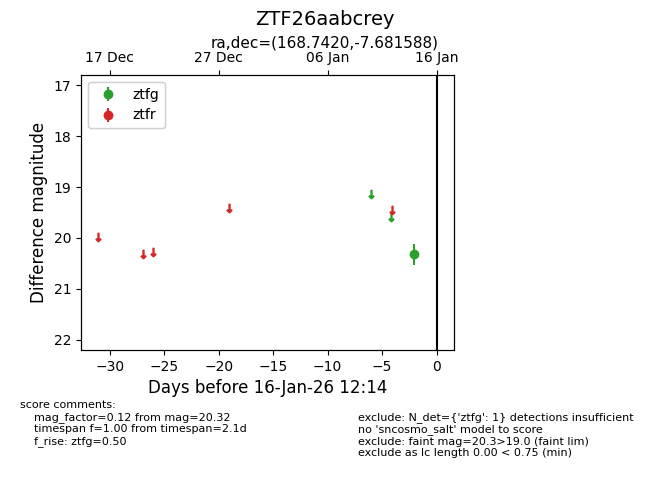
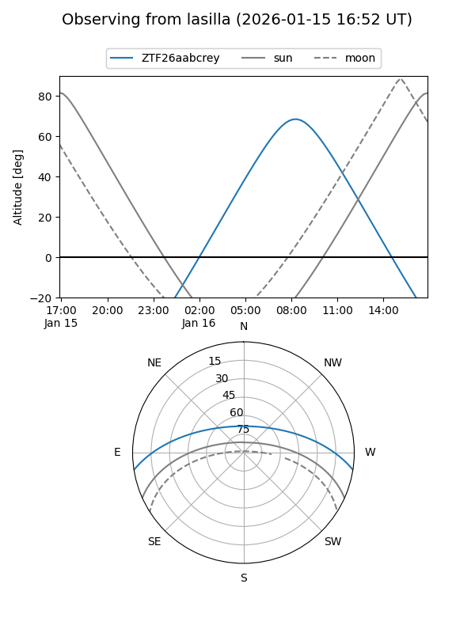
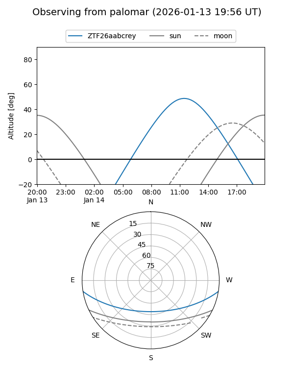

ZTF26aabcrey
Target ZTF26aabcrey at 2026-01-16 12:15
Aliases and brokers:
FINK: link
Lasair: link
ALeRCE: link
alt names
ZTF26aabcrey (ztf,fink_ztf)
Coordinates:
equatorial (ra, dec) = 168.7420,-7.68159
equatorial (HMS+DMS) = 11:14:58.08,-07:40:53.72
galactic (l, b) = (265.6239,+48.07850)
Flags:
Photometry:
last ztfg=20.32
1 ztfg detections
Lightcurve

Visibility


Additional plots